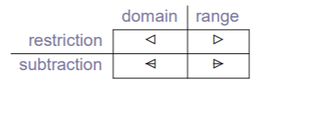

Z Sets
Set
A set is an unordered collection of distinct objects (No duplicates and unordered)
Set Equality
Let S and T be sets of the same type. Then S = T is true if, and only if, S and T contain precisely the same members.
Subsets
Let S and T be sets of the same type. Then S ⊆ T is true if, and only if, every member of s is also in T
Proper Subsets
- Let S and T be sets of the same type. Then: S ⊂ T is tru is, and only if, both S ⊆ T and S ≠ T.
- If S ⊂ T then s is said to be a proper subset of T.
- S ⊂ T ⇔(S ⊆ T ) ∧(S ≠ T )
The powerset Operator
- Let s be an arbitrary set. Then the set of all subsets of s is given by Ps.
- T ∈ PS ⇔(T ⊆ S)
Union
Let S and T be arbitrary sets. Then x ∈ (S ∪ T) is true if, and only if, either x ∈ S or x ∈ T .
Intersection
Let S and T be arbitrary sets. Then x ∈ (S ∩ T) if, and only if, both x ∈ S and x ∈ T .
Difference
Let S and T be arbibrary sets. Then x ∈ (S \ T ) is true if, and only if, x ∈ S and x ∈/ T .
Cardinality
The cardinality of a set is the number of elements in it.
If s is an arbitrary set, then the cardinality of S is denoted # S.
Cartesian Product
Cartesian products are one way of making objects whic hhave structure.
If S1, . . . ,Sn are arbitrary sets, then
S1 × ···× Sn
is the set of n-tuples over S1, . . . ,Sn:
S1 × ···× Sn ==
{ (e1, . . . , en) | (e1 ∈ S1) ∧···∧(en ∈ Sn)} .
Domain
- the set representing all input values for which the function is defined
Range
- the set representing all outputs of the function that correspond to a defined input
Definition 1
- If f is an arbitrary function then dom f is an expression returning the domain of f and ran f is an expression returning its range
Example
if PN == {(mungo,5678),(mary,1234)} then
dom PN = mungo, mary
ran PN = 5678, 1234
Theorems about domain and range
- #dom f >= #ran f
- dom(f U g) = dom(f) U dom(g)
- ran(f U g) = ran(f) U ran(g)
- dom(f ∩ g) =(dom f) ∩ (dom g)
- ran(f ∩ g) = (ran f) ∩ (ran g)
- dom ∅ = ∅
- ran ∅ = ∅
Partial Functions (Definition 2)
- If f is a function from T1 to T2, then f is a partial function. The set of all partial functions from T1 to T2 is given by the expression
Note
- ∅ ∈ (T1 →| T2)
- if f ∈ (T1 →| T2) then f may be undefined for some value in T1
Total Functions (Definition 3)
- if f ∈ T1 →I T2 and dom f = T1, then f is said to be a total function from T1 to T2.
- The set of total functions from T1 to T2 is given by the expression: T1 → T2
Injection Definition 4
- A funtion is one-to-on if and only if, every element in the domain maps to a different element in the range.
- One-to-one functions are also called injections
Surjection Definition 5
- A function f is onto if, and only if, every possible element y ∈ ran f has some corresponding value x ∈ dom f such that f(x) = y
- Functions that are onto are also called surjections.
- All elements have input
Example
T1 == {a,b,c,d}
T2 == {e,f,g}
f1 :T1 →| T2
f2 :T1 →| T2
f1 == {(a,e),(b,f),(c,g)} surjection
f2 == {(a,e),(b,f)} not a surjection
Bijection
Finally, if a function is both an injection and a surjection, then it is called a bijection
Maplet Notation
- A more convenient way of writing the function {(mary,1234),(mungo,5678)} is to write
{mary |→ 1234, mungo |→ 5678} - The symbol |→ 1234 is called a maplet arrow:the expression mary |→1234 is called a maplet
Domain Restriction Definition 6
- ⊲ is the domain restriction
- suppose f is a function f:T1 →| T2 and S is a set s: PT1 then S ⊲ f is an expression which returns the function obtained from f by removing from it all maplet x | → y such that x ∈/ S
Example
Let PN == {mary |→ 1234, mungo |→5678, midge |→ 9999} and S1 == {mary,mungo}, S2 == {midge}
then S1 ⊲ PN = {mary |→ 1234, mungo |→5678}, S2 ⊲ PN ={midge |→ 9999}.
- We remove 9999 because S1 only has 1234 and 5678.
Range Restriction
- ⊳ is the range restriction
- Suppose f is a function f: T1→| T2 and S is a set S:PT2 then f ⊳ S is an expression which returns the function obtained from f by removing from it all maplets x |→ y such that y ∈/ S.
Example
S1 == {1234,5678}
S2 = {9999}
f ⊳ S1 = {mary |→ 1234, mungo |→ 5678}
f ⊳ S1 = {midge |→ 9999}
Domain subtraction
- ⊲- is the domain subtraction operator
- Suppose f is a function f: T1 →| T2 and S is a set S: PT1 then S ⊲- f is an expression which returns the function obtained from f by removing from it all maplets x | → y such that x ∈ S.
Example
S == mary
S ⊲- PN ={mungo|→5678，midge|→9999}
Range Subtraction
Function Overriding
{PN\mary|→1234} U (mary|→1111) = mary |→ 1111
⊕ symbol is used for function overriding
PN ⊕ {mary|→1111} = {mary|→1111,mungo|→5678,midge|→9999}
Summary
